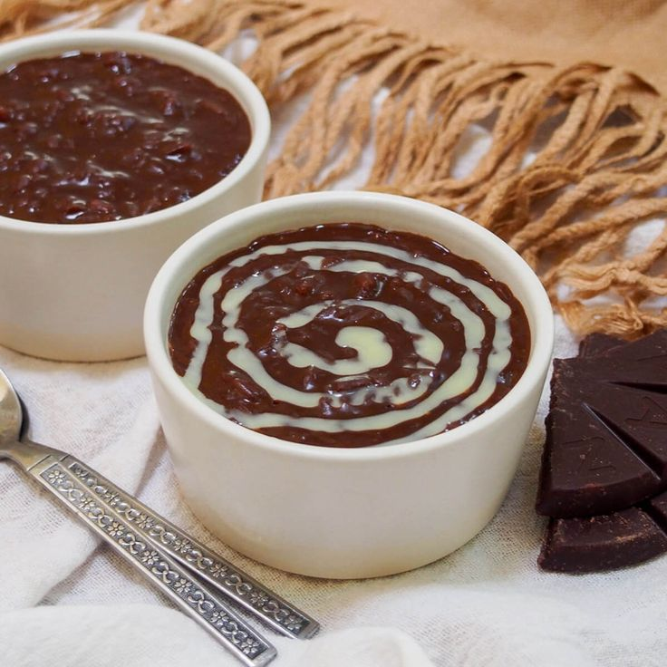

BULALO

INGREDIENTS:
- Ingredient 1 ▢2 lbs beef shank
- Ingredient 2 ▢½ cabbage whole leaf individually detached
- Ingredient 3 ▢1 bundle bok choy
- Ingredient 4 ▢2 cobs corn each cut into 3 parts
- Ingredient 5 ▢2 Tablespoons whole peppercorn
- Ingredient 6 ▢1/2 cup green onions cut unto 1 1/2 inch pieces
- Ingredient 7 ▢1 onion
- Ingredient 8 ▢34 ounces water
- Ingredient 9 ▢fish sauce to taste optional
INSTRUCTIONS:
- Step 1 In a big cooking pot, pour in water and bring to a boil
- Step 2 Put-in the beef shank followed by the onion and whole pepper corn
- Step 3 then simmer for 1.5 hours (30 mins if using a pressure cooker) or until meat is tender.
- Step 4 Add the corn and simmer for another 10 minutes
- Step 5 Add the fish sauce,cabbage, pechay, and green onion (onion leeks)
- Step 6 Serve hot. Share and Enjoy!
CREAMY CHICKEN SOPAS

INGREDIENTS:
- Ingredient 1 ▢12 oz. chicken breasts boneless
- Ingredient 2 ▢½ piece cabbage sliced
- Ingredient 3 ▢3 stalks celery chopped
- Ingredient 4 ▢1 piece onion diced
- Ingredient 5 ▢3 pieces hotdog sliced
- Ingredient 6 ▢¾ cups carrots diced
- Ingredient 7 ▢12 oz. evaporated milk
- Ingredient 8 ▢1 ½ cups elbow macaroni
- Ingredient 9 ▢2 teaspoons minced garlic
- Ingredient 10 ▢1 piece Knorr Chicken Cube
- Ingredient 11 ▢6 to 8 cups water
- Ingredient 12 ▢3 tablespoons cooking oil
- Ingredient 13 ▢Salt and ground black pepper to taste
INSTRUCTIONS:
- Step 1 Boil 3 cups water in a medium pot. Add the chicken breasts.
- Step 2 Cover and cook in medium heat for 15 to 18 minutes.
- Step 3 You may add more water if needed.
- Step 4 Separate the chicken from the water.Let the chicken cool down and then shred
- Step 5 Set both shredded chicken and water aside.Heat oil in a large soup pot.
- Step 6 Sauté the garlic until it turns medium brown.
- Step 7 Add onion, celery, and carrot. Continue to sauté for 2 to 3 minutes.
- Step 8 Add the shredded chicken. Stir and cook for 1 minute.
- Step 9 Add the hot dog.Quickly stir and then pour the water used to boil the chicken.
- Step 10 Also pour the remaining water.Let boil.Add the Knorr Chicken Cube.
- Step 11 Stir. Cover and cook for 3 to 5 minutes.Put the elbow macaroni in the pot.
- Step 12 Cook for 10 minutes.Add the cabbage. Stir and cook for 3 to 5 minutes.
- Step 13 Note: you can add more water if needed.
- Step 14 Pour the evaporated milk. Stirlet boil, cover and cook for another 3 minutes.
- Step 15 Add salt and ground black pepper to taste.
- Step 16 Transfer to a serving bowl. Serve.Share and enjoy!
ARROZ CALDO
INGREDIENTS:
- Ingredient 1 ▢1½ lbs chicken cut into serving pieces
- Ingredient 2 ▢1½ cups rice uncooked
- Ingredient 3 ▢34 ounces water about 1 liter
- Ingredient 4 ▢2 Tablespoons fish sauce
- Ingredient 5 ▢1 teaspoon garlic
- Ingredient 6 ▢1/4 teaspoon ground black pepper
- Ingredient 7 ▢1 cup onion minced
- Ingredient 8 ▢4 eggs hard boiled
- Ingredient 9 ▢1 cup scallions green onions, minced
- Ingredient 10 ▢2 knobs ginger julienned
- Ingredient 11 ▢3 tbsp safflower kasubha
- Ingredient 12 ▢1 chicken cube bouillon
- Ingredient 13 ▢1 lemon or 4 pieces calamansi
- Ingredient 14 ▢2 Tablespoon cooking oil
INSTRUCTIONS:
- Step 1 In a pot, heat the cooking oil then saute the garlic, onion, and ginger
- Step 2 Dash-in some ground black pepper
- Step 3 Add the chicken cube and cook until the cube melts
- Step 4 Put-in the chicken and cook until outer layer color turns golden brown
- Step 5 Add the fish sauce and uncooked rice then mix and cook for a few minutes
- Step 6 Pour-in the water and bring to a boil
- Step 7 Stir occasionally and simmer until the rice is fully cooked (about 30 to 40 minutes)
- Step 8 Put-in the hard boiled eggs
- Step 9 Add the safflower for additional color and aroma
- Step 10 Serve hot with garlic, minced scallions, and lemon. Share and Enjoy!
LOMI
INGREDIENTS:
- Ingredient 1 ▢1/2 lb. fresh flat miki noodles
- Ingredient 2 ▢10 ounces boneless chicken breast sliced into thin pieces
- Ingredient 3 ▢1 Knorr Chicken Cube
- Ingredient 4 ▢1/2 medium cabbage chopped
- Ingredient 5 ▢1 cup chopped carrots
- Ingredient 6 ▢1/2 cup chopped scallions
- Ingredient 7 ▢1 medium yellow onion cubed
- Ingredient 8 ▢3 cloves garlic crushed
- Ingredient 9 ▢1 tablespoon cornstarch
- Ingredient 10 ▢1 egg
- Ingredient 11 ▢6 to 7 cups water
- Ingredient 12 ▢1 teaspoon salt
- Ingredient 13 ▢1/4 teaspoon ground black pepper
- Ingredient 14 ▢3 tablespoons cooking oil
INSTRUCTIONS:
- Step 1 Heat oil in a cooking pot.
- Step 2 Saute garlic, onion, and carrots.
- Step 3 Add the sliced chicken. Cook until the chicken turns light brown.
- Step 4 Pour the water into the pot. Let boil.
- Step 5 Add Knorr chicken cube. Stir. Cover the pot.
- Step 6 Cook the chicken between low to medium heat for 15 minutes.
- Step 7 Add cabbage and miki noodles. Cook for 8 to 10 minutes.
- Step 8 Add scallions. Stir
- Step 9 Pour the egg. Continuously stir to prevent the egg from forming.
- Step 10 Add 1/4 cup water to cornstarch and stir to mix. Pour it into the pot.
- Step 11 Stir until the soup thickens.
- Step 12 Add salt and ground black pepper. Cook for 2 minutes.
- Step 13 Transfer to a serving bowl. Serve.
- Step 14 Share and enjoy!
CHAMPORADO

INGREDIENTS:
- Ingredient 1 ▢8 tbsp cocoa powder or about 4 pieces tableya
- Ingredient 2 ▢1 cup glutinous rice malagkit
- Ingredient 3 ▢1/2 cup sugar
- Ingredient 4 ▢3 1/2 cups water
- Ingredient 5 ▢condensed milk optional
INSTRUCTIONS:
- Step 1 Pour 2 1/2 cups of water in a pot and bring to a boil
- Step 2 Put-in the glutinous rice and allow water to re-boil for a few minutes
- Step 3 Dilute the cocoa powder in 1 cup warm water then pour-in the pot.Stir continuously
- Step 4 Once the glutinous rice is cooked (about 12 to 18 minutes of cooking with constant stirring),
- Step 5 add the sugar and cook for another 5 minutes or until the texture becomes thick.
- Step 6 Remove from the pot and place in a serving bowl.
- Step 7 Serve hot with a swirl of condensed milk on top.